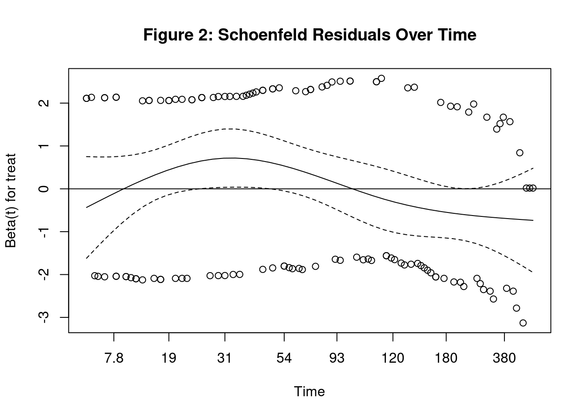
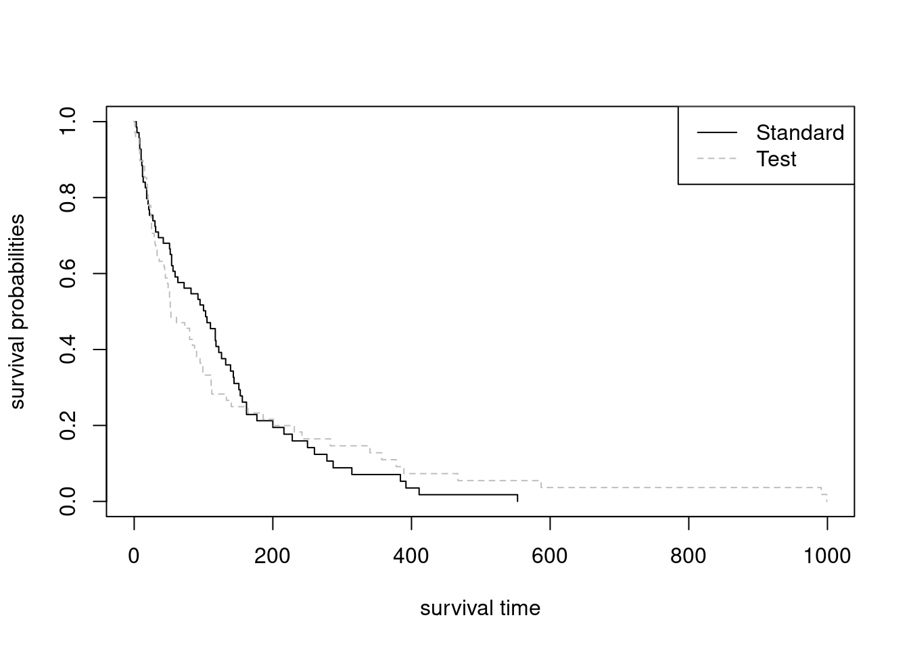
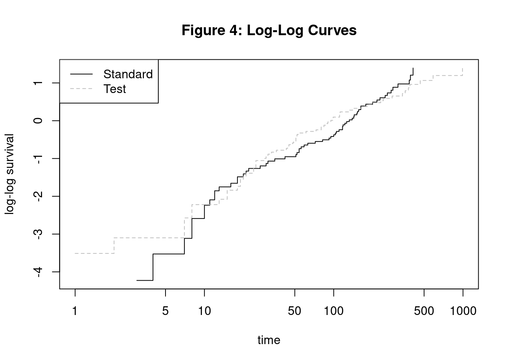
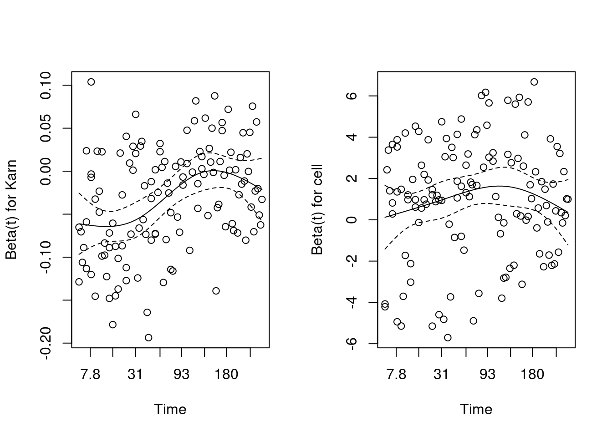
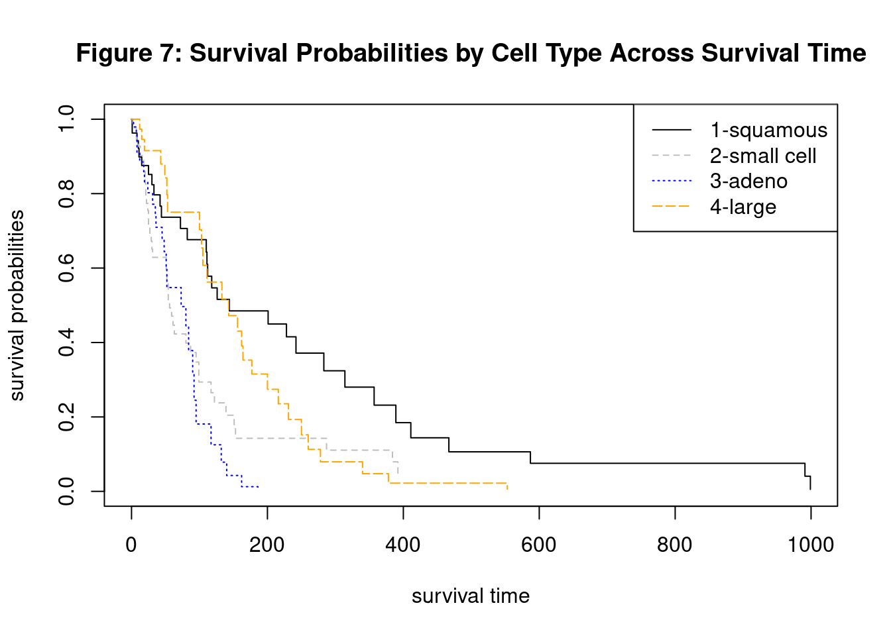

Cox Proportional Hazards Model Group Project
1. Introduction
The Cox Proportional Hazards (CPH) model is a method used for performing survival analyses, often in the medical field. It is used to relate several risk factors simultaneously against survival time and is widely considered to be one of the most popular methods in survival analyses. One of the key reasons why it is popular in survival analysis is due to its ability to handle censored time-to-event data (Fisher and Lin 1999). “Censored” in this case would mean that some observed units were recorded for various lengths of time, but the event of interest did not occur during those studies. In our specific case-study, the event of interest would mean the patient passing away. With this, Sir David Cox, the inventor of the model, considered such predictors and covariates when creating the Cox method. The risks, or “hazards,” were thought of as proportional to the probability of an event occurring at any particular time. Some of the risk factors used in its analyses include covariates – independent variables that can influence the outcome of an event but are not of direct interest in a study - such as treatment, age, gender, height, and so on. Another key factor in the CPH’s popularity in survival analysis is its semiparametric nature (Kleinbaum and Klein 2012). The composition of the model is as follows:
\[ H(t) = H_0(t) \times exp(b_1x_1 + b_2x_2 + ... + b_kx_k) \]
Where \(H_0 (t)\) is considered to be the baseline hazard function of the model. If in the event all other variables X are equal to zero, the formula reduces to \(H_0 (t)\) ; hence, it is the baseline hazard function. It is due to the hazard function being unspecified that the CPH model can be considered semiparametric. In other words, it is semiparametric because there is no assumption about the distribution of survival times, but rather assumes that the effects of different variables that affect survival are constant over time, hence the composition of its formula (D’Arrigo et al. 2021). Where parametric models have completely specified functional forms, the unspecified nature of the baseline hazard function allows the CPH model to be naturally more flexible. Another reason for its popularity is that because of the hazard function being unspecified, the CPH model is robust, being able to obtain favorable results such as good estimates of regression coefficients, hazard ratios of interest, and adjusted survival curves (Kleinbaum and Klein 2012). As a robust model, the CPH method can obtain results comparable to those of a parametric model. While parametric methods are still preferred over the CPH models in cases where the correct method is clearly indicated, the CPH model demonstrates its versatility by being both semiparametric in nature as well as attaining comparable results to its parametric counterparts.
1.1. Application
While the Cox Proportional Hazard model is mainly used for modeling survival data and identifying relationships between predictors and survival times, and is commonly used in the medical research field, it has also been applied in fields like finance and the social sciences. (Hendry 2014) In medical research it is used to identify factors that influence patient outcomes, e.g. death or other health status. For example, (Thiruvengadam, Lakshmi, and Ramanujam 2021) used the Cox model to analyze the factors that determine the length of stay for COVID-19 patients, using different demographic and health information to find connections to the length of stay or even death of patients. (Thiruvengadam, Lakshmi, and Ramanujam 2021) Other medical research often mirrors this structure and the model has also been applied in the context of clinical trials. For example, researchers used the model to determine treatment risks and treatment effectiveness for those in a systolic blood pressure intervention trial, finding a 25% lower hazard rate for those receiving intensive treatment. (Stensrud et al. 2019) The Cox proportional hazard model excels at modeling this type of scenario, using survival data that can be censored, i.e. as in the case where patients have died or left the study.
Although commonly used for medical research, the application is straightforward in other fields with some research looking at the duration of events like marriages, recidivism, and bank failures. For example, researchers examining the factors leading to bank failure used the 2008 recession as a case study to determine and predict what factors, e.g. asset ratios and loan amounts, are indicators of failure. (R. A. Cox, Kimmel, and Wang 2017)
The model has some limitations especially when not including time dependent structure in the model. In that case, the model assumes the hazard ratio is the same across the time sample, which is often not the case in medical research. This shortcoming is identified in (Stensrud and Hernán 2020), which highlights how treatment effects may not be constant over a whole sample and in some cases may have no effect for months and then a drastic effect after some time. This has led to the use of models which can include time dependent variables.
2. Methods
The Cox PH model proposed in 1972 allows the estimation of regression coefficients of a hazard function without specifying the baseline hazard (D. R. Cox 1972) The hazard function is the instantaneous risk of failure at time (t). The hazard function for other survival distributions such as Weibull take the form below:
\[h_i(t)= exp (α+ Z_iβ) \]
where
\(h_i(t)\) is the hazard function with respect to time
α is a constant that represents baseline hazard when all Zs are zero
\(Z_i\) are the covariates measured for \(i\)-th individuals (\(Z_{1i}+, Z_{2i}, ..., Z_{pi}\)) is the unknown regression coefficients (Fox 2002).
In contrast to Weibull, the Cox PH model leaves the baseline hazard unspecified (i.e. \(α=h_i(t)\) ), and this baseline function can fluctuate with respect time instead of remaining constant.
\[h_i(t)= h_0(t) exp(Z_iβ) \] where
\(h_i(t)\) is the hazard function with respect to time
\(h_0(t)\) is the unknown baseline hazard function which can fluctuate with respect to time (D. R. Cox 1972).
To demonstrate the impact of differing variables on the hazard function, Cox used the example of one Z variable (p=1) with values 0 and 1. The corresponding hazard functions become \(h_0(t)\) and \(h_0(t) \times exp(\beta)\) (D. R. Cox 1972). This example can be extended to include more variables and used to calculate the hazard ratio for the two cases:
\[ HR = {h_i(t) \over h_{i'}(t)} = {h_0(t)\times exp(\eta_i) \over h_0(t) \times exp(\eta_{i'})} = {exp(\eta_i) \over exp(\eta_{i'})} \]
Where
\(h_i(t) \over h_{i'}(t)\) is the hazard ratio (HR) and is assumed to be constant with respect to time [Stensrud et al. (2019)](Fox 2002)
\(\eta_i\) is corresponding linear predictors of \(i\)
\(\eta_{i'}\) is corresponding linear predictors of \(i'\)
The benefit of the Cox PH model is that the baseline hazard function can fluctuate with time instead of being constant or multiplicative. Another benefit is that the regression coefficients can be estimated without knowing the baseline hazard using the partial likelihood method as proposed by Cox (D. R. Cox 1972). Although the baseline hazard function can fluctuate, the Cox PH model assumes that the hazard ratio (HR) is constant. If the constant HR assumption is broken, one solution is to include an interaction between the covariate and time into the Cox model which is called time-dependent covariates (Fox 2002) . Time dependent covariates are variables that vary with respect to time. Time dependent covariates can be modeled in the Cox by replacing \(Z_i\) with \(Z_i(t)\) which indicates that \(Z_i\) varies with respect to time.
\[h_i(t)= h_0(t) \times exp(Z_i(t)β) \]
where
\(h_i(t)\) is the hazard function with respect
\(Z_i(t)\) are the covariates that may be time-fixed or time-dependent (Hendry 2014)
\(\beta\) are the unknown regression coefficients.
The hazard ratio (HR) then becomes the following:
\[ {h_0(t) \times exp(Z_i(t)β) \over h_0(t) \times exp(Z_j(t)β)} = {exp(Z_i(t)β) \over exp(Z_j(t)β)} \]
This allows the use of Cox PH for non-constant HR if the covariate is time-dependent. A similar approach can be used for time-independent covariates that violate proportional hazard assumption. In general, the log hazard and covariates are assumed to be linear in the Cox PH model (Fox 2002). The Cox model also assumes that the failure time of an individual is independent of the other individuals. This means that if one participant in a study dies that no other participants are affected. The Cox PH also assumes that censored individuals have a failure time that exceeds the censoring time (D. R. Cox 1972). For example, a participant is still alive at the end of the study and is right-censored. The assumptions of proportional HR, independent individuals and right-censoring also applies to other exponential survival distributions (Fox 2002) (Hendry 2014). A key downside of Cox PH is that the survival function cannot be calculated directly and is estimated since the baseline hazard is unknown. This hinders clinicians in determining the net benefit of treatments (McLernon et al. 2023).
3. Analysis and Results
3.1. Purpose
The focus of this research is to find out if the treatment has a positive effect on survival time, and we will test if any of the other variables also have any significant effect on survival time. The Proportional Hazards (PH) assumption must also remain valid to prevent biased effect estimates.
3.2. Data Description
The data used is from a Veteran’s Administrative lung cancer trial of 137 male patients with advanced inoperable lung cancer. (Kalbfleisch and Prentice 2011) The data set is available through the MASS package (Venables and Ripley 2002) in R (R Core Team 2022). This data is ideal for modeling with a Cox Proportional Hazard model with the survival time and treatment variables being of the most interest.
| Attribute | Type | Description |
|---|---|---|
| stime | Numeric | survival or follow-up time, in days |
| status | Numeric | dead or alive/censored; 0 (alive), 1 (dead) |
| treat | Nominal | treatment, either standard or test (chemotherapy); 1 (standard), 2 (test) |
| age | Numeric | patient age in years |
| Karn | Numeric | Karnofsky score of patient performance, on scale of 0 to 100 |
| diag | Numeric | patient time since diagnosis, measured at time of entry to trial, in months |
| cell | Nominal | one of four cell types; 1 (squamous), 2 (small cell), 3 (adeno), 4 (large) |
| prior | Nominal | denotes prior therapy; 10 (yes), 0 (no) |
Per the National Cancer Institute, the Karnofsky score is standard way to measure how well a patient can perform ordinary tasks. A higher score indicates a higher ability to do these tasks, in our study this score is taken at the start of the study.
3.3. Data Visualization
Code
# Load Data
data(VA)
#look at first few rows
kable(head(VA, 3), caption = "Table 2: Sample Rows from VA Lung Trial Data") %>%
kable_styling(bootstrap_options = c("striped", "hover"), full_width = TRUE) %>%
row_spec(0, bold = T, background = "#666666", color = "white")| stime | status | treat | age | Karn | diag.time | cell | prior |
|---|---|---|---|---|---|---|---|
| 72 | 1 | 1 | 69 | 60 | 7 | 1 | 0 |
| 411 | 1 | 1 | 64 | 70 | 5 | 1 | 10 |
| 228 | 1 | 1 | 38 | 60 | 3 | 1 | 0 |
Code
summary_stats <- summary(VA[, c("stime", "age", "Karn", "diag.time")])
#Convert summary statistics to a table
kable(summary_stats, caption = "Table 3: Summary Statistics for VA Lung Trial Data") %>%
kable_styling(bootstrap_options = c("striped", "hover"), full_width = TRUE) %>%
row_spec(0, bold = T, background = "#666666", color = "white")| stime | age | Karn | diag.time | |
|---|---|---|---|---|
| Min. : 1.0 | Min. :34.00 | Min. :10.00 | Min. : 1.000 | |
| 1st Qu.: 25.0 | 1st Qu.:51.00 | 1st Qu.:40.00 | 1st Qu.: 3.000 | |
| Median : 80.0 | Median :62.00 | Median :60.00 | Median : 5.000 | |
| Mean :121.6 | Mean :58.31 | Mean :58.57 | Mean : 8.774 | |
| 3rd Qu.:144.0 | 3rd Qu.:66.00 | 3rd Qu.:75.00 | 3rd Qu.:11.000 | |
| Max. :999.0 | Max. :81.00 | Max. :99.00 | Max. :87.000 |
Code
# Copied VA dataset so we can safely convert status to factors
VA.summary <- VA
VA.summary$status <- as.factor(VA.summary$status)
#second prop summary
summary_stats2 <- summary(VA.summary[, c("status", "treat", "cell", "prior")])
#Convert summary statistics to a table
kable(summary_stats2, caption = "Table 4: Summary Count Statistics for VA Lung Trial Data") %>%
kable_styling(bootstrap_options = c("striped", "hover"), full_width = TRUE) %>%
row_spec(0, bold = T, background = "#666666", color = "white")| status | treat | cell | prior | |
|---|---|---|---|---|
| 0: 9 | 1:69 | 1:35 | 0 :97 | |
| 1:128 | 2:68 | 2:48 | 10:40 | |
| NA | NA | 3:27 | NA | |
| NA | NA | 4:27 | NA |
Code
#Create a scatter plot matrix using the GGally package
va_subset <- VA[, c("stime", "age", "Karn", "diag.time", "treat")]
ggpairs(va_subset, title = "Figure 1: Scatterplot Matrix of VA Lung Trial Data",
columns = c("stime", "age", "Karn", "diag.time"), ggplot2::aes(color = treat),
lower = list(continuous = "points", combo = "dot_no_facet", mapping = ggplot2::aes(color=treat, alpha = 0.8)),
diag = list(continuous = wrap("densityDiag"), mapping = ggplot2::aes(color = treat, alpha = 0.1))) +
scale_color_manual(values = c("#00BFC4", "#F8766D")) +
labs(subtitle = "Grouped by Treatment, Standard (Blue) and Test (Red)")
This plot shows a scatterplot matrix of the variables of Survival Time, Age, Karnofsky Score, and Diagnosis Time where the lower half is a typical scatter plot between the two variables in the cell, the diagonal shows a density plot, and the upper diagonal shows a correlation coefficient between the two variables with significance indicators. One asterisk denotes significance at an alpha = 0.10 level, ** = 0.05 level, and *** = <0.001 level. The plots are grouped/colored by the treatment groups, with those receiving the test treatment in red, and those receiving the standard treatment in blue. The only variable significantly correlated with Survival Time is the Karnofsky score, at the alpha 0.05 level. Looking at the density plots, the standard group’s plot in blue is more concentrated to the left of the group receiving test treatment which indicates a lower survival time for those in the standard treatment group. In general, age and the diagnosis time variables, do not seem to be clearly correlated with survival time. The Karnofsky score seems to be positively correlated with the survival time, which is reinforced by the significant correlation between the two. We might expect Karnofsky score to then be correlated in the models, but this might change when accounting for the other variables.
3.4. Statistical Modeling
Treatment Only Cox PH Model
Cox PH model allows us to determine the effect of variables by using the hazard ratio (HR). First, we will use treatment variable to determine if it is significant. We will use the survival package (T. M. Therneau 2023) in R to run the Cox PH.
Code
# Label variables for gtsummary tables
attr(VA$treat, "label") = "Treatment"
attr(VA$Karn, "label") = "Karnofsky score"
attr(VA$age, "label") = "Patient's age"
attr(VA$diag.time , "label") = "Time since diagnosis"
attr(VA$cell , "label") = "Cell type"
attr(VA$prior, "label") = "Prior therapy"
levels(VA$treat) = c("standard", "test")
levels(VA$cell) = c("1-squamous", "2-small cell", "3-adeno", "4-large")
levels(VA$prior) = c("yes", "no")Code
# Fit model with treatment only
Y = Surv(VA$stime, VA$status)
cox.unimod <- coxph(Y ~ treat, data=VA)
cox.unimod %>% tbl_regression(exponentiate = T) %>%
add_glance_table(
include = c(logLik, concordance)
) %>%
modify_caption("**Table 5: Treatment Only Model**") | Characteristic | HR1 | 95% CI1 | p-value |
|---|---|---|---|
| Treatment | |||
| standard | — | — | |
| test | 1.02 | 0.71, 1.45 | >0.9 |
| Log-likelihood | -505 | ||
| c-index | 0.525 | ||
| 1 HR = Hazard Ratio, CI = Confidence Interval | |||
The Cox PH model found that the treatment type only is insignificant. A key assumption of the Cox PH model is that the hazard is proportional (i.e. the HR is constant across time). To validate the proportional hazard assumption, we will use the scaled Schoenfeld’s residuals to compare the difference between the observed treatment value and the weighted-average of other individuals. (Grambsch and Therneau 1994) If the HR is constant, the smoothed residual curve will stay around 0 as time increases, which validates the proportional hazard assumption. (T. Therneau, Crowson, and Atkinson 2017)
Code
# Plotting graphs of Schoenfeld residuals vs time
phtest.unimod = cox.zph(cox.unimod, transform = rank)
plot(phtest.unimod, main = "Figure 2: Schoenfeld Residuals Over Time")
abline(h=0)
From the plot, we can see that the confidence interval for the residuals stay around 0. We will also run a statistical test against the Schoenfeld residuals to determine if the residuals are correlated with time. A small p-value (less than 0.05) means there is a significant correlation between the residuals and time, which means the proportional hazard assumption is invalid.
Code
# Using Scheonfeld to test for proportional-hazards assumption
kable(phtest.unimod$table, caption = "Table 6: Scheonfeld Test for Proportional-Hazards Assumption") %>%
kable_styling(bootstrap_options = c("striped", "hover"), full_width = TRUE) %>%
row_spec(0, bold = T, background = "#666666", color = "white")| chisq | df | p | |
|---|---|---|---|
| treat | 3.530256 | 1 | 0.0602585 |
| GLOBAL | 3.530256 | 1 | 0.0602585 |
Based on the p-value for treatment, we fail to reject the null hypothesis that the proportional hazard assumption is valid. Since the p-value is very close to the cutoff, we will use a graphical method based the survival probability curve.
We could use Cox PH to estimate survival probability curve based on fitted model. However, we will use the Kaplan-Meier method, which was does not depend on a fitted model, to estimate the probability of survival with respect to time. Using the Kaplan-Meier estimates, we can plot estimated survivor curves for both treatments. (T. Therneau, Crowson, and Atkinson 2017) (Kleinbaum and Klein 2012)
Code
# Plotting graph of Kaplan-Meier curve
kmfit = survfit(Y ~ treat, data=VA)
plot(kmfit, main = "Figure 3: Survival Curve", lty = c("solid", "dashed"), col=c("black","grey"),
xlab="survival time",ylab="survival probabilities")
legend("topright", c("Standard","Test"), lty=c("solid","dashed"),
col=c("black","grey"))
Code
#Log log of survival curve
plot(kmfit,fun="cloglog", lty = c("solid", "dashed"), col=c("black","grey") ,xlab="time",ylab="log-log survival",
main="Figure 4: Log-Log Curves")
legend("topleft", c("Standard","Test"), lty=c("solid","dashed"),
col=c("black","grey"))
Code
tbl_survfit(kmfit,
times=c(15, 30, 90,180,360),
label_header="**{time} Days**"
) %>%
modify_caption("**Table 7: Survival Probability for Particular Days for Treatment Only Model**") | Characteristic | 15 Days | 30 Days | 90 Days | 180 Days | 360 Days |
|---|---|---|---|---|---|
| Treatment | |||||
| standard | 84% (76%, 93%) | 72% (63%, 84%) | 55% (44%, 68%) | 21% (13%, 34%) | 7.1% (2.8%, 18%) |
| test | 85% (77%, 94%) | 68% (57%, 80%) | 38% (28%, 52%) | 23% (15%, 36%) | 11% (5.3%, 23%) |
From the two plot, we observe that the effectiveness of test treatment is less effective in the beginning. Then, the test treatment becomes more effective than the standard treatment towards the end. With Kaplan-Meier survival curves, we are able to visualize survival probabilities for both treatment groups. Since the hazard function is the rate of change in the survival curve, we can use the Kaplan-Meier to also validate the proportional hazard assumption. The survival curves would be parallel if the hazard was proportional. However, the curves cross multiple time which informs us that the proportional hazard assumption is actually invalid.
Multiple Variable Cox PH Model
Now, we will insert all the variables in the Cox PH model and use Schoenfeld residuals to determine which variables specifically violate the proportional hazard assumption.
Code
# Fit model with all variables.
# stime and status are the output values
cox.mod <- coxph(Y ~ treat + age + Karn + diag.time + cell + prior, data=VA)
cox.mod %>% tbl_regression(exponentiate = T) %>%
add_glance_table(
include = c(logLik, concordance)
) %>%
modify_caption("**Table 8: Multiple Variable Cox PH Model**") | Characteristic | HR1 | 95% CI1 | p-value |
|---|---|---|---|
| Treatment | |||
| standard | — | — | |
| test | 1.34 | 0.89, 2.02 | 0.2 |
| Patient's age | 0.99 | 0.97, 1.01 | 0.3 |
| Karnofsky score | 0.97 | 0.96, 0.98 | <0.001 |
| Time since diagnosis | 1.00 | 0.98, 1.02 | >0.9 |
| Cell type | |||
| 1-squamous | — | — | |
| 2-small cell | 2.37 | 1.38, 4.06 | 0.002 |
| 3-adeno | 3.31 | 1.83, 5.96 | <0.001 |
| 4-large | 1.49 | 0.86, 2.60 | 0.2 |
| Prior therapy | |||
| yes | — | — | |
| no | 1.07 | 0.68, 1.69 | 0.8 |
| Log-likelihood | -474 | ||
| c-index | 0.736 | ||
| 1 HR = Hazard Ratio, CI = Confidence Interval | |||
Code
# Using cox.zph() to test for proportional-hazards assumption
phtest.mod = cox.zph(cox.mod, transform = rank)
kable(phtest.mod$table, caption = "Table 9: Proportional-Hazards Assumption Test") %>%
kable_styling(bootstrap_options = c("striped", "hover"), full_width = TRUE) %>%
row_spec(0, bold = T, background = "#666666", color = "white")| chisq | df | p | |
|---|---|---|---|
| treat | 0.2756574 | 1 | 0.5995617 |
| age | 1.7699934 | 1 | 0.1833829 |
| Karn | 13.5315475 | 1 | 0.0002346 |
| diag.time | 0.0076616 | 1 | 0.9302500 |
| cell | 15.3979076 | 3 | 0.0015063 |
| prior | 2.2309441 | 1 | 0.1352712 |
| GLOBAL | 35.2225392 | 8 | 0.0000244 |
Code
# Plotting graphs of Schoenfeld residuals vs time
par(mfrow=c(1,2))
plot(phtest.mod[3])
plot(phtest.mod[5])
mtext("Figure 5: Schoenfeld Residuals Over Time", side = 3, line = -3, outer = TRUE)
The significant variables of Karnofsky score and cell type were found to violate the proportional hazard assumption. In order to use them for analysis, we could only use Cox PH for a portion of the data, implement a Stratified Cox model, or use an Extended Cox PH model for Time-Varying Coefficients.
Cox PH Model on events after 180 days
We try to filter the data to events greater than 180 days and run the Cox PH model for that time interval only. The idea is that the hazard ratio will be constant over that time period.
Code
#Filter to only include events after 180 days
VA.180 = filter(VA, stime >= 180)
tbl_summary(VA.180) %>%
modify_caption("**Table 10: Summary Statistics For Stime Over 180 Days**")| Characteristic | N = 271 |
|---|---|
| stime | 287 (231, 390) |
| status | 25 (93%) |
| Treatment | |
| standard | 13 (48%) |
| test | 14 (52%) |
| Patient's age | 58 (50, 64) |
| Karnofsky score | |
| 40 | 1 (3.7%) |
| 50 | 4 (15%) |
| 60 | 5 (19%) |
| 70 | 6 (22%) |
| 80 | 5 (19%) |
| 90 | 6 (22%) |
| Time since diagnosis | 7 (3, 12) |
| Cell type | |
| 1-squamous | 13 (48%) |
| 2-small cell | 3 (11%) |
| 3-adeno | 1 (3.7%) |
| 4-large | 10 (37%) |
| Prior therapy | 17 (63%) |
| 1 Median (IQR); n (%) | |
Code
summary_stats3 <- summary(VA.180[, c("stime", "status", "age", "Karn", "diag.time")])After limiting the dataset to only greater 180 days, we are only left with 27 events. This sample size is too small to make any definitive conclusions as you will see in the test statistics below.
Code
# Fit model with all variables.
# stime and status are the output values
cox.mod180 <- coxph(Surv(stime, status) ~ treat + age + Karn + diag.time + cell + prior, data=VA.180)
cox.mod180 %>% tbl_regression(exponentiate = T) %>%
add_glance_table(
include = c(logLik, concordance)
) %>%
modify_caption("**Table 11: Events after 180 days Model**") | Characteristic | HR1 | 95% CI1 | p-value |
|---|---|---|---|
| Treatment | |||
| standard | — | — | |
| test | 0.73 | 0.18, 3.00 | 0.7 |
| Patient's age | 1.01 | 0.95, 1.08 | 0.7 |
| Karnofsky score | 0.99 | 0.95, 1.04 | 0.7 |
| Time since diagnosis | 1.12 | 1.02, 1.23 | 0.017 |
| Cell type | |||
| 1-squamous | — | — | |
| 2-small cell | 0.61 | 0.11, 3.46 | 0.6 |
| 3-adeno | |||
| 4-large | 2.62 | 0.81, 8.48 | 0.11 |
| Prior therapy | |||
| yes | — | — | |
| no | 0.53 | 0.16, 1.78 | 0.3 |
| Log-likelihood | -49.4 | ||
| c-index | 0.761 | ||
| 1 HR = Hazard Ratio, CI = Confidence Interval | |||
We will use ANOVA with the Likelihood Ratio test to determine if we can simplify the model.
Code
cox.mod180.r <- coxph(Surv(stime, status) ~ treat + diag.time, data=VA.180)
kable(anova(cox.mod180.r, cox.mod180, test="LRT"), caption = "Table 12: ANOVA Test On >180 Days Models") %>%
kable_styling(bootstrap_options = c("striped", "hover"), full_width = TRUE) %>%
row_spec(0, bold = T, background = "#666666", color = "white")| loglik | Chisq | Df | Pr(>|Chi|) |
|---|---|---|---|
| -56.49270 | NA | NA | NA |
| -49.41536 | 14.15467 | 5 | 0.0146562 |
Code
cox.mod1 = cox.mod180Although we may be tempted to remove the insignificant variables, the model performs worse with the reduced model having a significantly lower Log Likelihood. (Kleinbaum and Klein 2012) Below is the final model using this method.
\[h(t) = {h_0(t)} \times \exp(-0.317 \text{(treat-test)}+0.012 \text{(age)}-0.0087 \text{(Karn)}+0.112\text{(diag.time)}-0.502 \text{(cell-small)}+0.965 \text{(cell-large)}-0.642 \text{(prior-no)})\]
Code
# Using cox.zph() to test for proportional-hazards assumption
phtest.mod = cox.zph(cox.mod180, transform = rank)
kable(phtest.mod$table, caption = "Table 13: Proportional-Hazards Assumption Test On >180 Model") %>%
kable_styling(bootstrap_options = c("striped", "hover"), full_width = TRUE) %>%
row_spec(0, bold = T, background = "#666666", color = "white")| chisq | df | p | |
|---|---|---|---|
| treat | 0.1987677 | 1 | 0.6557173 |
| age | 7.6345683 | 1 | 0.0057260 |
| Karn | 1.9759955 | 1 | 0.1598129 |
| diag.time | 0.5600187 | 1 | 0.4542527 |
| cell | 3.8645595 | 2 | 0.1448177 |
| prior | 3.0752373 | 1 | 0.0794930 |
| GLOBAL | 13.9214591 | 7 | 0.0525960 |
Since this model is not likely to produce significant results, we will look at using the Stratified Cox model on the full dataset.
Stratified Cox model
The Stratified Cox model assumes a different baseline hazard function for each categorical variable that does not meet the proportional hazard assumption. We can stratify on the non-proportional cell type, which will estimate the effects of the other variables for each cell type. The downside is that we cannot compare the effect of each cell type on survival using hazard ratios (HR).
Code
cox.modstrat <- coxph(Y ~ treat + age + Karn + diag.time + strata(cell) + prior, data=VA)
cox.modstrat %>% tbl_regression(exponentiate = T) %>%
add_glance_table(
include = c(logLik, concordance)
) %>%
modify_caption("**Table 14: Stratified Cox Model**") | Characteristic | HR1 | 95% CI1 | p-value |
|---|---|---|---|
| Treatment | |||
| standard | — | — | |
| test | 1.33 | 0.88, 2.01 | 0.2 |
| Patient's age | 0.99 | 0.97, 1.01 | 0.2 |
| Karnofsky score | 0.96 | 0.95, 0.97 | <0.001 |
| Time since diagnosis | 1.00 | 0.98, 1.01 | 0.7 |
| Prior therapy | |||
| yes | — | — | |
| no | 1.18 | 0.75, 1.88 | 0.5 |
| Log-likelihood | -317 | ||
| c-index | 0.704 | ||
| 1 HR = Hazard Ratio, CI = Confidence Interval | |||
This form of the stratified Cox model assumes that the coefficients are the same across each of the four (4) cell types. We can also run a stratified Cox model where the coefficients can vary between strata by using interaction terms. (Kleinbaum and Klein 2012)
Code
cox.modstratI <- coxph(Y ~ treat + age + Karn + diag.time + prior + treat:cell + age:cell + Karn:cell + diag.time:cell +strata(cell) + prior:cell, data=VA)
#anova(cox.modstrat, cox.modstratI, test="LRT")
kable(anova(cox.modstrat, cox.modstratI, test="LRT"), caption = "Table 15: ANOVA Test On Stratified Models") %>%
kable_styling(bootstrap_options = c("striped", "hover"), full_width = TRUE) %>%
row_spec(0, bold = T, background = "#666666", color = "white")| loglik | Chisq | Df | Pr(>|Chi|) |
|---|---|---|---|
| -316.6013 | NA | NA | NA |
| -305.0879 | 23.02686 | 15 | 0.0835713 |
Based on the Likelihood Ratio test, we can assume that the no-interaction stratified Cox model is sufficient. Below is the final model:
\[h_g(t) = {h_{0g}(t)} \times \exp(0.286\text{(treat-test)}-0.012\text{(age)}-0.0383\text{(Karn)}-0.0034\text{(diag.time)}+0.169\text{(prior-no)})\] where \[g = 1, 2, 3, 4 \text{ (number of cell types)}\]
Code
cox.mod2 = cox.modstrat
phtest.mod2 = cox.zph(cox.modstrat, transform=rank)
kable(phtest.mod2$table, caption = "Table 16: Proportional-Hazards Assumption Test On Stratified Cox Model") %>%
kable_styling(bootstrap_options = c("striped", "hover"), full_width = TRUE) %>%
row_spec(0, bold = T, background = "#666666", color = "white")| chisq | df | p | |
|---|---|---|---|
| treat | 0.0262396 | 1 | 0.8713166 |
| age | 2.3231624 | 1 | 0.1274607 |
| Karn | 7.0082904 | 1 | 0.0081133 |
| diag.time | 0.4095567 | 1 | 0.5221946 |
| prior | 1.5249071 | 1 | 0.2168784 |
| GLOBAL | 17.9329487 | 5 | 0.0030316 |
The Karnofsky score still violates the proportional hazards assumption. If we wanted to stratify it, we would first need to combine the scores into fewer groups. If we grouped Karnofsky scores into high, medium, and low bins, that would result in 12 different curves. We will not apply stratification to Karnofsky score in this paper. Below are survival curves for cell type based the Stratified Cox model.
Code
plot(survfit(cox.modstrat), main = "Figure 7: Survival Probabilities by Cell Type Across Survival Time",
lty = c("solid","dashed", "dotted","longdash"), col=c("black","grey","blue","orange"),
xlab="survival time",ylab="survival probabilities")
legend("topright", c("1-squamous","2-small cell", "3-adeno", "4-large"), lty=c("solid","dashed", "dotted","longdash"),
col=c("black","grey","blue","orange"))
Extended Cox PH model for Time-Varying Coefficients
Another approach to variables with nonproportional hazard ratios is specify a function for the coefficients that change with time. This function could be linear, logarithmic, or a step function. For this analysis, we will run the Cox PH model over specific time intervals using a step function for the Karnofsky score. Before we can run the Cox PH across the intervals of 0-90, 90-180, and 180+ days, we must create a new column from the original dataset.
Code
VA.cp = survSplit(Surv(stime, status) ~ ., data=VA, cut=c(90,180), episode="tgroup")
#look at first few rows
kable(head(VA.cp, 5), caption = "Table 17: Sample Rows With New Column") %>%
kable_styling(bootstrap_options = c("striped", "hover"), full_width = TRUE) %>%
row_spec(0, bold = T, background = "#666666", color = "white")| treat | age | Karn | diag.time | cell | prior | tstart | stime | status | tgroup |
|---|---|---|---|---|---|---|---|---|---|
| standard | 69 | 60 | 7 | 1-squamous | yes | 0 | 72 | 1 | 1 |
| standard | 64 | 70 | 5 | 1-squamous | no | 0 | 90 | 0 | 1 |
| standard | 64 | 70 | 5 | 1-squamous | no | 90 | 180 | 0 | 2 |
| standard | 64 | 70 | 5 | 1-squamous | no | 180 | 411 | 1 | 3 |
| standard | 38 | 60 | 3 | 1-squamous | yes | 0 | 90 | 0 | 1 |
Note the addition of the “tstart” and “tgroup” columns in the new dataset
Code
cox.modextend = coxph(Surv(tstart, stime, status) ~ treat + age + diag.time + cell + prior + Karn:strata(tgroup),
data=VA.cp)
cox.modextend %>% tbl_regression(exponentiate = T) %>%
add_glance_table(
include = c(logLik, concordance)
) %>%
modify_caption("**Table 18: Extended Cox Model**") | Characteristic | HR1 | 95% CI1 | p-value |
|---|---|---|---|
| treat | |||
| standard | — | — | |
| test | 1.12 | 0.74, 1.69 | 0.6 |
| age | 0.99 | 0.97, 1.01 | 0.2 |
| diag.time | 1.00 | 0.98, 1.02 | 0.8 |
| cell | |||
| 1-squamous | — | — | |
| 2-small cell | 2.61 | 1.49, 4.57 | <0.001 |
| 3-adeno | 3.14 | 1.72, 5.73 | <0.001 |
| 4-large | 1.41 | 0.81, 2.47 | 0.2 |
| prior | |||
| yes | — | — | |
| no | 1.09 | 0.69, 1.72 | 0.7 |
| Karn * strata(tgroup) | |||
| Karn * tgroup=1 | 0.95 | 0.94, 0.97 | <0.001 |
| Karn * tgroup=2 | 1.01 | 0.98, 1.03 | 0.6 |
| Karn * tgroup=3 | 1.00 | 0.97, 1.03 | >0.9 |
| Log-likelihood | -464 | ||
| c-index | 0.754 | ||
| 1 HR = Hazard Ratio, CI = Confidence Interval | |||
Code
phtest.modex = cox.zph(cox.modextend, transform=rank)
kable(phtest.modex$table, caption = "Table 19: Proportional-Hazards Assumption Test On Extended Cox Model") %>%
kable_styling(bootstrap_options = c("striped", "hover"), full_width = TRUE) %>%
row_spec(0, bold = T, background = "#666666", color = "white")| chisq | df | p | |
|---|---|---|---|
| treat | 1.0887360 | 1 | 0.2967514 |
| age | 2.7258129 | 1 | 0.0987378 |
| diag.time | 0.1938075 | 1 | 0.6597664 |
| cell | 8.1863861 | 3 | 0.0423127 |
| prior | 3.5518587 | 1 | 0.0594788 |
| Karn:strata(tgroup) | 2.5606073 | 3 | 0.4644375 |
| GLOBAL | 22.0786582 | 10 | 0.0147089 |
To address the nonproportional hazard of the cell type, we will also stratify on the cell type to create an stratified-extended Cox model. (Ratnaningsih et al. 2019)
Code
cox.modse = coxph(Surv(tstart, stime, status) ~ treat + age + diag.time + strata(cell) + prior + Karn:strata(tgroup),
data=VA.cp)
phtest.modse = cox.zph(cox.modse, transform=rank)
kable(phtest.modse$table, caption = "Table 20: Proportional-Hazards Assumption Test On Stratified-Extended Cox Model") %>%
kable_styling(bootstrap_options = c("striped", "hover"), full_width = TRUE) %>%
row_spec(0, bold = T, background = "#666666", color = "white")| chisq | df | p | |
|---|---|---|---|
| treat | 1.201679 | 1 | 0.2729865 |
| age | 2.170807 | 1 | 0.1406524 |
| diag.time | 1.210340 | 1 | 0.2712648 |
| prior | 2.159055 | 1 | 0.1417319 |
| Karn:strata(tgroup) | 1.991584 | 3 | 0.5741553 |
| GLOBAL | 12.324530 | 7 | 0.0903790 |
This model satisfies the proportional hazard assumption. We will now check if we can remove some of the insignificant variables.
Code
cox.modse_r = coxph(Surv(tstart, stime, status) ~ treat + strata(cell) + Karn:strata(tgroup),
data=VA.cp)
# Using anova with Likelihood ratio test
kable(anova(cox.modse_r, cox.modse, test="LRT"), caption = "Table 21: ANOVA Test On Stratified-Extended Cox Model") %>%
kable_styling(bootstrap_options = c("striped", "hover"), full_width = TRUE) %>%
row_spec(0, bold = T, background = "#666666", color = "white")| loglik | Chisq | Df | Pr(>|Chi|) |
|---|---|---|---|
| -311.0858 | NA | NA | NA |
| -310.0636 | 2.044385 | 3 | 0.5632458 |
Code
cox.mod3 = cox.modse_rSince the difference in Likelihood ratio test is insignificant, we can simplify the model to treat + Karn + cell.
Code
cox.modse_r %>% tbl_regression(exponentiate = T) %>%
add_glance_table(
include = c(logLik, concordance)
) %>%
modify_caption("**Table 22: Stratified-Extended Cox Model**") | Characteristic | HR1 | 95% CI1 | p-value |
|---|---|---|---|
| treat | |||
| standard | — | — | |
| test | 1.10 | 0.74, 1.66 | 0.6 |
| Karn * strata(tgroup) | |||
| Karn * tgroup=1 | 0.95 | 0.94, 0.97 | <0.001 |
| Karn * tgroup=2 | 1.01 | 0.98, 1.04 | 0.5 |
| Karn * tgroup=3 | 0.98 | 0.95, 1.02 | 0.4 |
| Log-likelihood | -311 | ||
| c-index | 0.705 | ||
| 1 HR = Hazard Ratio, CI = Confidence Interval | |||
\[h_g(t) = {h_{0g}(t)} \times \exp(0.0988\text{(treat-test)}-0.0464\text{(Karn*tgroup1)}+0.0097\text{(Karn*tgroup2)}-0.0179\text{(Karn*tgroup3)}\] where \[g = 1, 2, 3, 4 \text{ (number of cell types)}\] \[tgroup1 = 1 \text{ if } 0 \le t < 90 \] \[tgroup2 = 1 \text{ if } 90 \le t < 180 \] \[tgroup3 = 1 \text{ if } t \ge 180\]
3.5. Interpretations
Based on Cox PH for after 180 days, a patient receiving the test treatment has 0.73 times the hazard of a patient receiving the standard treatment. In other words, a male VA patient receiving the standard treatment is 37% more likely to die than one receiving the test treatment when adjusting for the other predictors. However, these results are insignificant especially when considering the small sample size.
Based on the Cox model stratified on cell type, a patient receiving the test treatment is 33% more likely to die than a patient receiving the standard treatment, but these treatment results are insignificant.
Using the Stratified-Extended Cox model, a patient on the test treatment is 10% more likely to die than one receiving the standard when adjusting for cell type and Karnofsky score. However, the treatment results are insignificant. The model also showed that the probability of dying for a male VA patient with a 10-point lower Karnofsky score is 57% more likely to die than a patient with a 10-point higher score for the first 90 days. The Karnofsky scores across the other time intervals are insignificant.
Overall, it seems that Karnofsky scores and cell type types are the strongest predictors of survival. The initial Karnofsky score have significant predictive effects at the beginning of study but the effect diminishes as time increases. The effect of cell type also varies as time increases. Treatment seems insignificant based on the multiple attempted models in this analysis.
4. Conclusion
In this paper, we were able to review which variables were significant in terms of impact on survival time while also ensuring that the Proportional Hazard (PH) Assumption was upheld. In our example, we tested various iterations of the Cox Proportional Hazard model to determine which variables, specifically treatment, were significant in the survival time of any given patient. The testing ranged from the standard Cox PH model itself, to utilizing Schoenfeld’s residuals and the stratified methods, as well as removing certain variables. We determined overall that treatment was insignificant and instead found that through the Stratified-Extended Cox model, the Karnofsky’s scores were stronger predictors of the survival time of any given patient. While it is preferable to conduct a study with more available data, the Cox Proportional Hazards model allows some room for censored and missing information while not compromising much in terms of accuracy.
The Cox Proportional Hazards model is a versatile tool to analyze covariates in the healthcare field. This, coupled with its ability to be adjusted as necessary to a censored or limited dataset, showcases its robust nature. With this model, researchers are able to accurately determine which risk factors may play a part in the survival time of a patient.